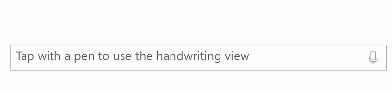
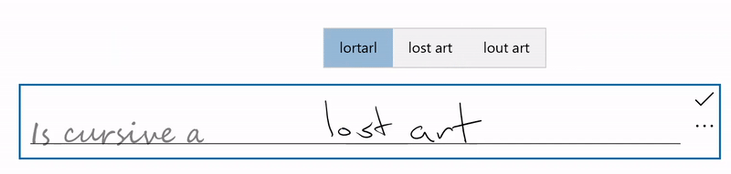
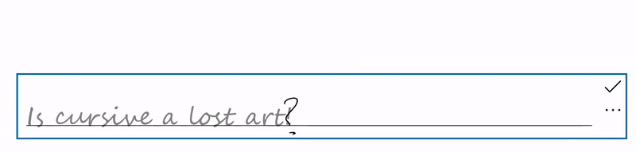
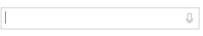
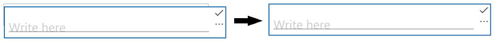
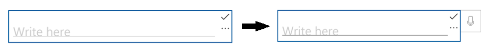
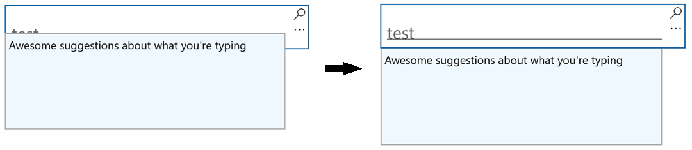

Text input with the handwriting view
Note
Handwriting view is not supported by text controls in the Windows App SDK. This article applies to UWP apps only.

Customize the handwriting view (for ink to text input) that is built into UWP text input controls such as the TextBox, RichEditBox, and AutoSuggestBox.
Overview
UWP text input controls support pen input using Windows Ink by transforming into a handwriting surface when a user taps into a text input box using a pen.
Text is recognized as the user writes anywhere in the handwriting surface while a candidate window shows the recognition results. The user can tap a result to choose it, or continue writing to accept the proposed candidate. The literal (letter-by-letter) recognition results are included in the candidate window, so recognition is not restricted to words in a dictionary. As the user writes, the accepted text input is converted to a script font that retains the feel of natural writing.
Note
The handwriting view is enabled by default, but you can disable it on a per-control basis and revert to the text input panel instead.

A user can edit their text using standard gestures and actions:
- strike through or scratch out - draw through to delete a word or part of a word
- join - draw an arc between words to delete the space between them
- insert - draw a caret symbol to insert a space
- overwrite - write over existing text to replace it

Disable the handwriting view
The built-in handwriting view is enabled by default.
You might want to disable the handwriting view if you already provide equivalent ink-to-text functionality in your application, or your text input experience relies on some kind of formatting or special character (such as a tab) not available through handwriting.
In this example, we disable the handwriting view by setting the IsHandwritingViewEnabled property of the TextBox control to false. All text controls that support the handwriting view support a similar property.
<TextBox Name="SampleTextBox"
Height="50" Width="500"
FontSize="36" FontFamily="Segoe UI"
PlaceholderText="Try taping with your pen"
IsHandwritingViewEnabled="False">
</TextBox>
Specify the alignment of the handwriting view
The handwriting view is located above the underlying text control and sized to accommodate the user's handwriting preferences (see Settings -> Bluetooth & devices -> Pen & Windows Ink -> Handwriting -> Font size). The view is also automatically aligned relative to the text control and its location within the app.
The application UI does not reflow to accommodate the larger control, which might occlude important UI.
The following snippet shows how to use the PlacementAlignment property of a TextBox HandwritingView to specify which anchor on the underlying text control is used to align the handwriting view.
<TextBox Name="SampleTextBox"
Height="50" Width="500"
FontSize="36" FontFamily="Segoe UI"
PlaceholderText="Try taping with your pen">
<TextBox.HandwritingView>
<HandwritingView PlacementAlignment="TopLeft"/>
</TextBox.HandwritingView>
</TextBox>
Disable auto-completion candidates
The text suggestion popup is enabled by default. It provides a list of top ink recognition candidates from which the user can select in case the primary candidate is incorrect.
If your application already provides robust, custom recognition functionality, you can use the AreCandidatesEnabled property to disable the built-in suggestions, as shown in the following example.
<TextBox Name="SampleTextBox"
Height="50" Width="500"
FontSize="36" FontFamily="Segoe UI"
PlaceholderText="Try taping with your pen">
<TextBox.HandwritingView>
<HandwritingView AreCandidatesEnabled="False"/>
</TextBox.HandwritingView>
</TextBox>
Use handwriting font preferences
A user can choose from a pre-defined collection of handwriting-based fonts to use when rendering text based on ink recognition (see Settings -> Bluetooth & devices -> Pen & Windows Ink -> Handwriting -> Font).
Your app can access this setting and use the selected font for the recognized text in the text control.
In this example, we listen for the TextChanged event of a TextBox and apply the user's selected font if the text change originated from the HandwritingView (or a default font, if not).
private void SampleTextBox_TextChanged(object sender, TextChangedEventArgs e)
{
((TextBox)sender).FontFamily =
((TextBox)sender).HandwritingView.IsOpen ?
new FontFamily(PenAndInkSettings.GetDefault().FontFamilyName) :
new FontFamily("Segoe UI");
}
Access the HandwritingView in composite controls
Composite controls that use either the TextBox or RichEditBox control (such as AutoSuggestBox), also support a HandwritingView.
To access the HandwritingView in a composite control, use the VisualTreeHelper API.
The following XAML snippet displays an AutoSuggestBox control.
<AutoSuggestBox Name="SampleAutoSuggestBox"
Height="50" Width="500"
PlaceholderText="Auto Suggest Example"
FontSize="16" FontFamily="Segoe UI"
Loaded="SampleAutoSuggestBox_Loaded">
</AutoSuggestBox>
In the corresponding code-behind, we show how to disable the HandwritingView on the AutoSuggestBox.
First, we handle the element's Loaded event and call a
FindInnerTextBoxfunction to start the visual tree traversal.private void SampleAutoSuggestBox_Loaded(object sender, RoutedEventArgs e) { if (FindInnerTextBox((AutoSuggestBox)sender)) autoSuggestInnerTextBox.IsHandwritingViewEnabled = false; }In the
FindInnerTextBoxfunction, we iterate through the visual tree (starting at an AutoSuggestBox) by calling aFindVisualChildByNamefunction.private bool FindInnerTextBox(AutoSuggestBox autoSuggestBox) { if (autoSuggestInnerTextBox == null) { // Cache textbox to avoid multiple tree traversals. autoSuggestInnerTextBox = (TextBox)FindVisualChildByName<TextBox>(autoSuggestBox); } return (autoSuggestInnerTextBox != null); } ```Finally, the
FindVisualChildByNamefunction iterates through the visual tree until the TextBox is retrieved.private FrameworkElement FindVisualChildByName<T>(DependencyObject obj) { FrameworkElement element = null; int childrenCount = VisualTreeHelper.GetChildrenCount(obj); for (int i = 0; (i < childrenCount) && (element == null); i++) { FrameworkElement child = (FrameworkElement)VisualTreeHelper.GetChild(obj, i); if ((child.GetType()).Equals(typeof(T)) || (child.GetType().GetTypeInfo().IsSubclassOf(typeof(T)))) { element = child; } else { element = FindVisualChildByName<T>(child); } } return (element); } ```
Reposition the HandwritingView
In some cases, you might need to ensure that the HandwritingView covers UI elements that it otherwise might not.
Here, we create a TextBox that supports dictation (implemented by placing a TextBox and a dictation button into a StackPanel).

As the StackPanel is now larger than the TextBox, the HandwritingView might not occlude all of the composite control.

To address this, set the PlacementTarget property of the HandwritingView to the UI element to which it should be aligned.
<StackPanel Name="DictationBox"
Orientation="Horizontal"
VerticalAlignment="Top"
HorizontalAlignment="Left"
BorderThickness="1" BorderBrush="DarkGray"
Height="55" Width="500" Margin="50">
<TextBox Name="DictationTextBox"
Width="450" BorderThickness="0"
FontSize="24" VerticalAlignment="Center">
<TextBox.HandwritingView>
<HandwritingView PlacementTarget="{Binding ElementName=DictationBox}"/>
</TextBox.HandwritingView>
</TextBox>
<Button Name="DictationButton"
Height="48" Width="48"
FontSize="24"
FontFamily="Segoe MDL2 Assets"
Content=""
Background="White" Foreground="DarkGray" Tapped="DictationButton_Tapped" />
</StackPanel>
Resize the HandwritingView
You can also set the size of the HandwritingView, which can be useful when you need to ensure the view doesn't occlude important UI.
Like the previous example, we create a TextBox that supports dictation (implemented by placing a TextBox and a dictation button into a StackPanel).
In this case, we resize the HandwritingView to ensure that the dictation button is visible.

To do this, we bind the MaxWidth property of the HandwritingView to the width of the UI element that it should occlude.
<StackPanel Name="DictationBox"
Orientation="Horizontal"
VerticalAlignment="Top"
HorizontalAlignment="Left"
BorderThickness="1"
BorderBrush="DarkGray"
Height="55" Width="500"
Margin="50">
<TextBox Name="DictationTextBox"
Width="450"
BorderThickness="0"
FontSize="24"
VerticalAlignment="Center">
<TextBox.HandwritingView>
<HandwritingView
PlacementTarget="{Binding ElementName=DictationBox}"
MaxWidth="{Binding ElementName=DictationTextBox, Path=Width"/>
</TextBox.HandwritingView>
</TextBox>
<Button Name="DictationButton"
Height="48" Width="48"
FontSize="24"
FontFamily="Segoe MDL2 Assets"
Content=""
Background="White" Foreground="DarkGray"
Tapped="DictationButton_Tapped" />
</StackPanel>
Reposition custom UI
If you have custom UI that appears in response to text input, such as an informational popup, you might need to reposition that UI so it doesn't occlude the handwriting view.

The following example shows how to listen for the Opened, Closed, and SizeChanged events of the HandwritingView to set the position of a Popup.
private void Search_HandwritingViewOpened(
HandwritingView sender, HandwritingPanelOpenedEventArgs args)
{
UpdatePopupPositionForHandwritingView();
}
private void Search_HandwritingViewClosed(
HandwritingView sender, HandwritingPanelClosedEventArgs args)
{
UpdatePopupPositionForHandwritingView();
}
private void Search_HandwritingViewSizeChanged(
object sender, SizeChangedEventArgs e)
{
UpdatePopupPositionForHandwritingView();
}
private void UpdatePopupPositionForHandwritingView()
{
if (CustomSuggestionUI.IsOpen)
CustomSuggestionUI.VerticalOffset = GetPopupVerticalOffset();
}
private double GetPopupVerticalOffset()
{
if (SearchTextBox.HandwritingView.IsOpen)
return (SearchTextBox.Margin.Top + SearchTextBox.HandwritingView.ActualHeight);
else
return (SearchTextBox.Margin.Top + SearchTextBox.ActualHeight);
}
Re-template the HandwritingView control
As with all XAML framework controls, you can customize both the visual structure and visual behavior of a HandwritingView for your specific requirements.
To see a full example of creating a custom template check out the Create custom transport controls how-to or the Custom Edit Control sample.